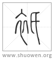

衹
緹或从氏。
清代 段玉裁《說文解字注》
- 帛丹黃色也。
謂丹而黃也下文云。縓、帛赤黃色。丹與赤不同者、丹者如丹沙。與赤異。其分甚微。故鄭注草人曰。赤緹、縓色也。酒正五齊。四曰緹齊。注曰。緹者、成而紅赤。若今下酒矣。按紅赤者、赤而白。緹齊不純赤。故謂之紅赤。緹齊俗作醍。見禮運。
- 从糸。是聲。
他禮切。十六部。
- 緹或作衹。
从衣、氏聲也。古氏與是同用。故是聲亦从氏聲。此篆與衣部袛裯之袛大别。其義則彼訓短衣。其音則氐聲在十五部。氏聲在十六部也。按唐石經周易衹旣平。詩衹攪我心。亦衹以異。左傳衹見疏也。論語亦衹以異。以及凡訓適之字皆从衣氏。葢有所受之矣。張參五經文字、經典字畫之砥柱也。衣部曰。衹止移切。適也。廣韵本孫愐唐韵曰。衹章移切。適也。玉篇衣部亦曰。衹之移切。適也。舊字相承可據如是。至集韵云。祇章移切。適也。始从示。然恐轉寫轉刊之誤耳。至類篇則衹祇二文皆訓適。至韵會而从示之祇訓適矣。此其遞譌之原委也。衹之訓適、以其音同在十六部而得其義。凡古語䛐皆取諸字音。不取字本義。皆叚借之法也。攷毛公我行其野傳曰。衹、適也。鄭何人斯箋、論語注曰。衹、適也。服虔左傳襄卄九年解云。衹、適也。王弼注坎卦曰。衹、辭也。顔師古竇嬰傳注曰。衹、適也。此古字古言之存者章章也。自宋以來刊版之書多不省照。衣改從示者不少。學者所宜訂正。錢氏大昕飬新錄乃云。說文無衹字。五經文字承玉篇之誤。未免千慮一失耳。衹譌祇。俗又作秖。唐人詩文用之、讀如支。今則改用只、讀如質。此古今推移之變也。若史記韓安國傳云。禔取辱耳。此用衹之同音字。如周易衹旣平。他家作禔而異其義。要是同音。○顔元孫干祿字書石本祇秖注云。上神祇、巨移反。下適秖、章移反。是則秖字起於唐初。葢六朝俗字。